Firimu is a social platform aimed at the community of analogue photographers connected online through the #filmisnotdead. Photographers can share work, access blog posts and articles about analogue photography and buy/sell cameras.
The target audience are analogue photography at any skill level.
I was mainly inspired by my own experiences online; I shoot and developed my own film and own 20 analogue cameras. There are so many questions that come along when using old cameras and developing your own film at home, I rely a lot on forums and blogs but never found a site with everything I needed all in one place.
I wanted to create a site that allows photographers to showcase their work and engage in constructive dialogue around creativity. I think that platforms like Instagram don’t actually accommodate artists, it’s incredibly superficial as opinions are influenced by followers and likes and recently Instagram’s community guidelines exclude certain artistic styles.
When creating the site, I had three main websites in mind;
- https://www.tumblr.com/
- https://parallaxphotographic.coop/
- https://andredwagner.com/
Tumblr focusses on community and brands itself as being open to individuality and self-expression. I wanted to adopt features that they have implemented which help them deliver a platform that satisfies their claims and meets the needs of their users.
Parallax Photographic Coop’s use a modern and clean design with a pastel colour pallet for their online store. It’s a beautiful artistic design and different from other analogue photography suppliers who frequently dated or industrial aesthetic. Although it acts primarily as an ecommerce site, they include a community page with photography submissions from customers.
Andre D Wanger is a professional photographer, I’m a fan of his work and appreciate the design of his online portfolio. The home page has a gallery feature and no scrolling, this is something I wanted to incorporate on my own site so users can interact with each piece individually before moving on. I wanted to remove scroll features on most social sites like Instagram, Tumblr etc and control the amount of content in the feed.
I chose to implement a structure a Hierarchical Structure allowing users to navigate from my Index Page (a showcase page) through the navigation bar and links into 4 other main sections including the Explore Page, Marketplace, Film Developing and Submissions page.
I thought that this would be an appropriate structure for the best user experience as this allows easy access to all main sections.
I ensured web accessibility for visitors with visual disabilities, audible dissabilities and cognitive and neurological disabilities.
My most obvious design choice was sticking to a black and white colour scheme for the page, I was considering users with visual impairments affecting contrast sensitivity as well as a pallete that would no distract from the images.
I also chose of san-serif fonts once again to accomodate visually impaired users as well as dyslexic users. When writing my HTML code I used wrappers for my page content and set a percentage width to allow users to adjust page sizes affecting both text size and line length. I used page zoom and made sure that text and images/videos adjusted seamlessly therefore accomodating users that may requirelarger text sizes.
Finally in my HTML I included text alteratives for all images as they are read aloud by screen readers.
My aim was so build a simple intuative design and my first consideration was using the heirachial structure as it's the most common structure online and so my users would be familiar with it.
The website only has 5 web pages so naturally I could design a simple menu located at the top of the website. Other links assisting with navigation and included in the body are highlighted using bold text and key words click "here". Guiding the user through the website is a contributer to a good user experience and I think I excuted this well.
I was able to keep a consisent layout through CSS by styling similar elements the same across the websites including margins, padding and text alignment.
I also built a responsive design to ensure that the website is optimized for any device. Images are resizable and the layout is flexible. it is key for the user t be able to view all the content on the page clearly and well presented.
I relied on mainly online Youtube Tutorials when creating elements I was unfamiliar with. I made use of tutorials for creating the carousel and the gallery for my Explore page.
When creating the carousel the online tutorial was great for understanding the general concept, I encountered some errors when using the images in HTML as instructed by the tutorial. I couldn't figure out my own error so i included them in the JS code instead by populating an array with the images using their locations and using a function that changes the images in the carousel by iterating through the array locations.
For the gallery I learned how to use the grid element and implement the hover transition. For my own website created a grid with only 2 coloums and designed the CSS to create a similar vertical feed of that of the Instagram Explore page unlike the tutorial which designed a grid of a 3 by 2 horizontal gallery.
A simple thing I learned was implementing Youtube videos using the HTML iframe tag. I wasn't familiar with this tag. At first I used the HTML video tag, and I encountered an error saying "Youtube wont connect" in the places where my media should have been. From previous experience of embedding APIs I decided to go onto the share option on the Youtube videos and found the right code.
On my page Firimu Board I was particularly impressed by my image carousel, I particularly like that users can use the buttons to navigate manually through it or have the carousel on a 6 second timer. It achieves the goal of showcasing user submissions. I also think the overall design for the Explore page and the Marketplace work well.
With more time I would most likely still focus on all 3 of the pages as they are the main aspects behind the concept of the website.
I would place the buttons of the carousel so that they overlay on top of the images and would also add javascript code to allow each imaged to be enlarged and viewed separately.
In the Explore page I would re-design a grid that allows images to be different sizes, images could be viewed individually and a blurb from the user who made the submission would be visible by clicking the image. I'd include a pop up form for users to input feeback about submissions instead of simply relying on external social media.
Finally in my Marketplace I would a shopping basket for purchases instead of having to use an email.
[1] Parallax Photopgraphic Coop, "How To Develop Colour Film", 2017[Online], Available: https://parallaxphotographic.coop/how-to-develop-colour-film/[Accessed: January 2020]
[1] Dev Ed,"How To Create An Image Slider in HTML, CSS, Javascript", 2018, Available: https://www.youtube.com/watch?v=KcdBOoK3Pfw [Accessed:December-2019]
[1] mmtus, "Gallery Using HTML, CSS, And JavaScript|hw To Open Images Using JavaScript| JavaScript Tutorial, 2019, Available: https://www.youtube.com/watch?v=dkLpo4shS6c&t=1806s [Accsessed:December-2019]
[1] https://petapixel.com/2014/05/29/70-inspirational-quotes-photographers/,"70 inspirational quotes for photography",2014,[Accessed: January 2020]
Site Map
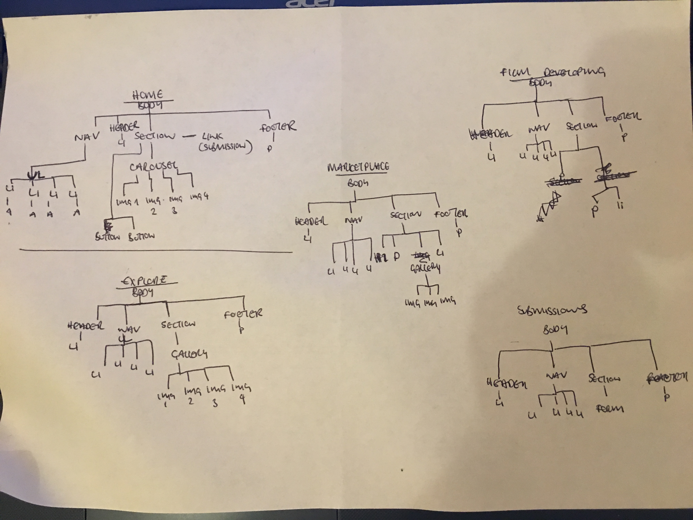
Intial Wireframe Designs
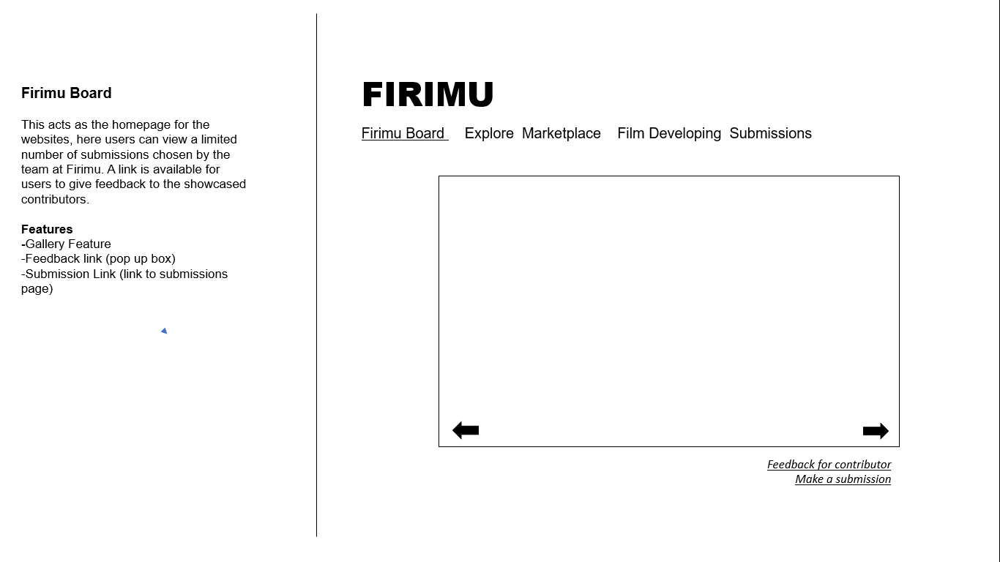
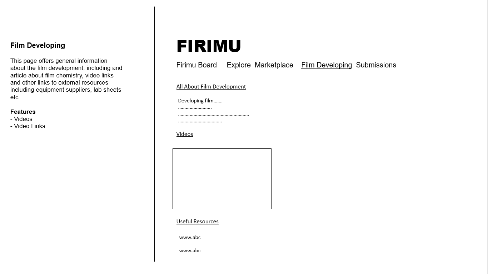
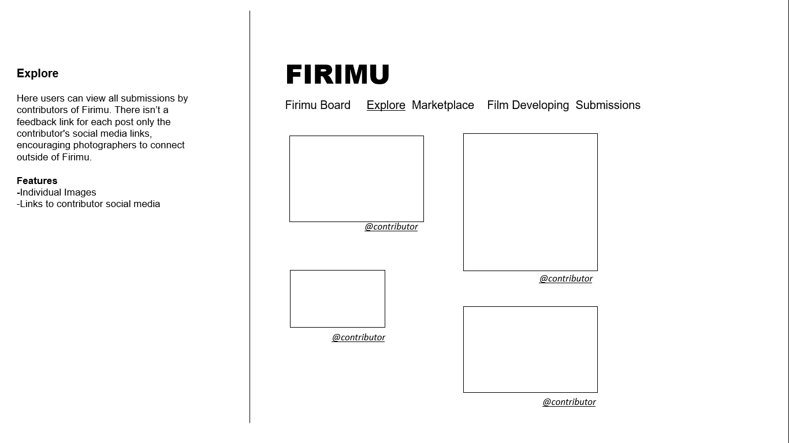
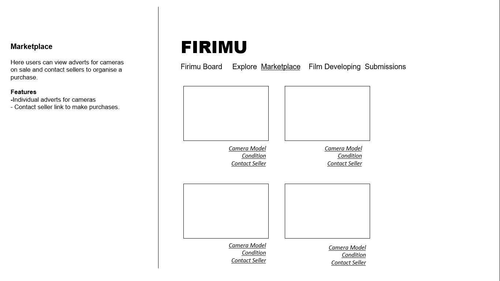
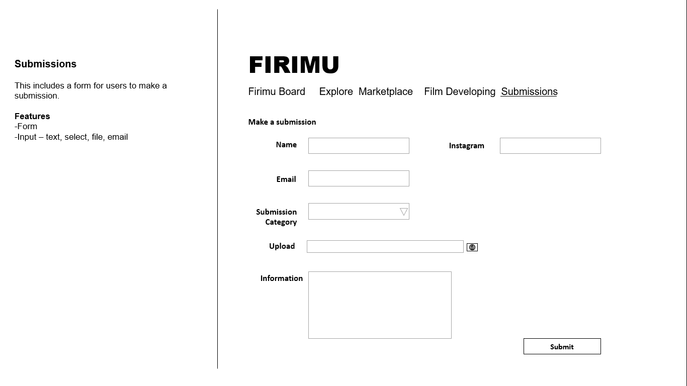
Final Wireframe Designs
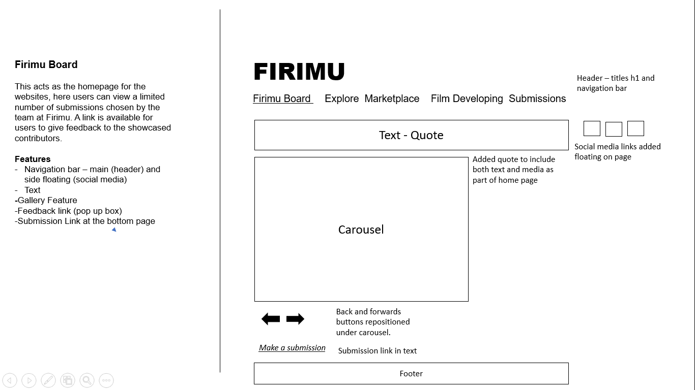
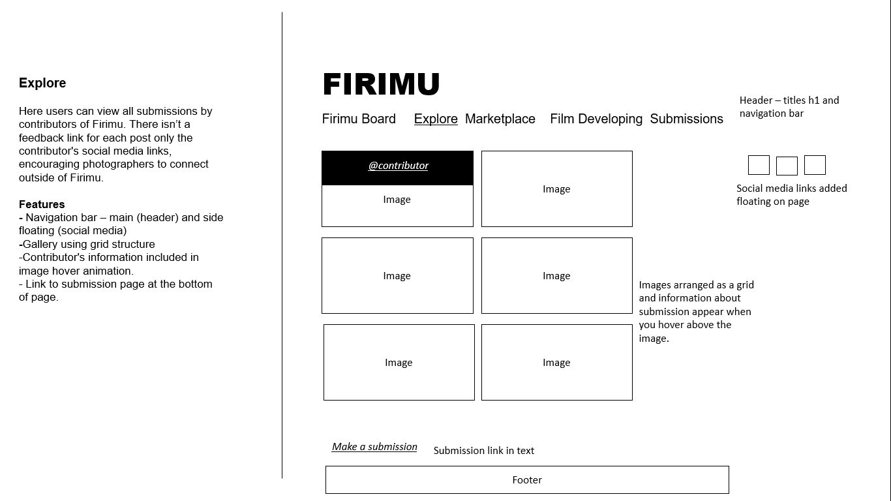
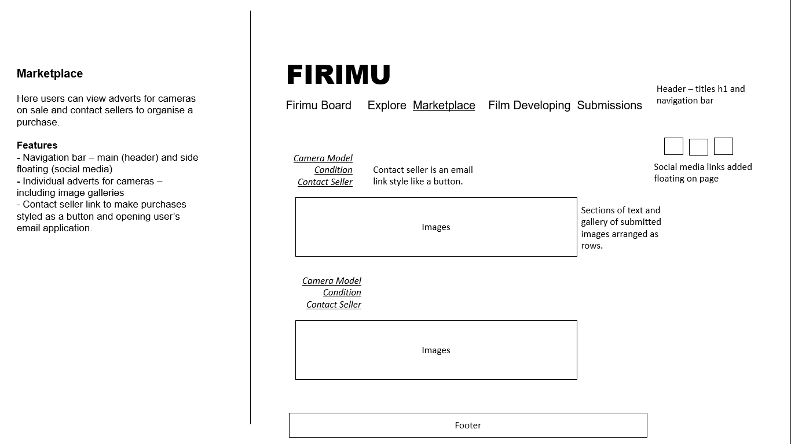
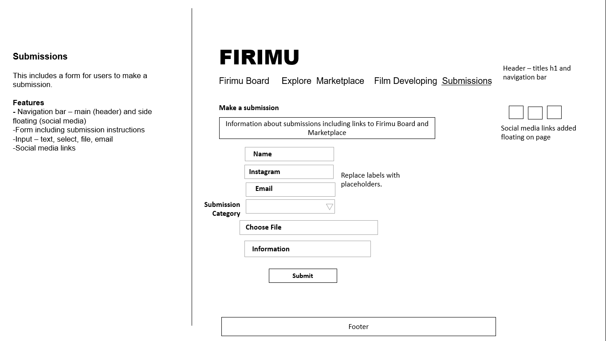
W3C Markup Validator Screenshots
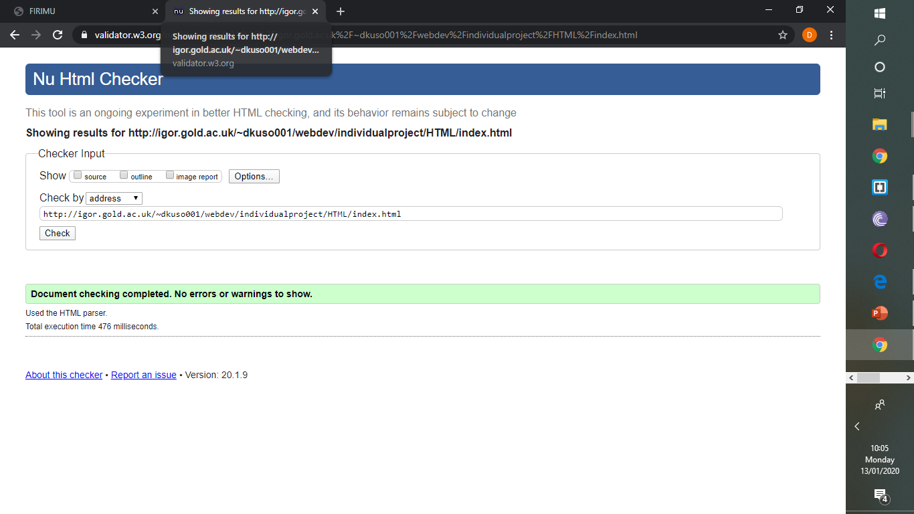
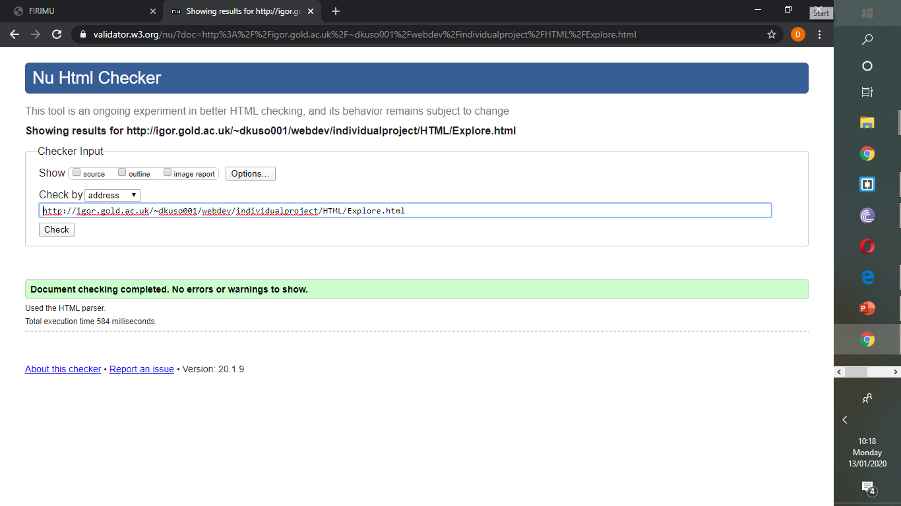
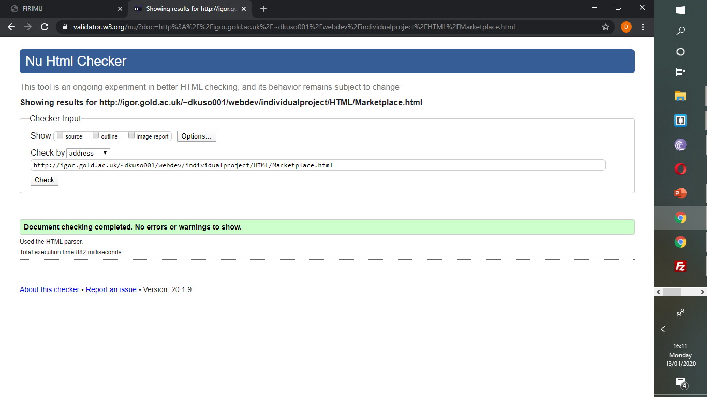
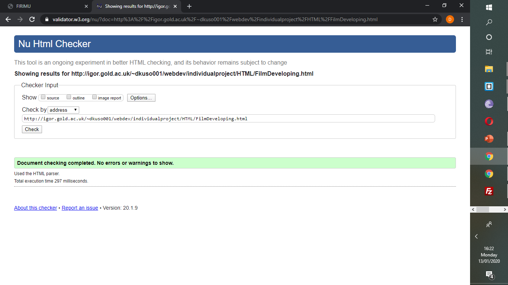
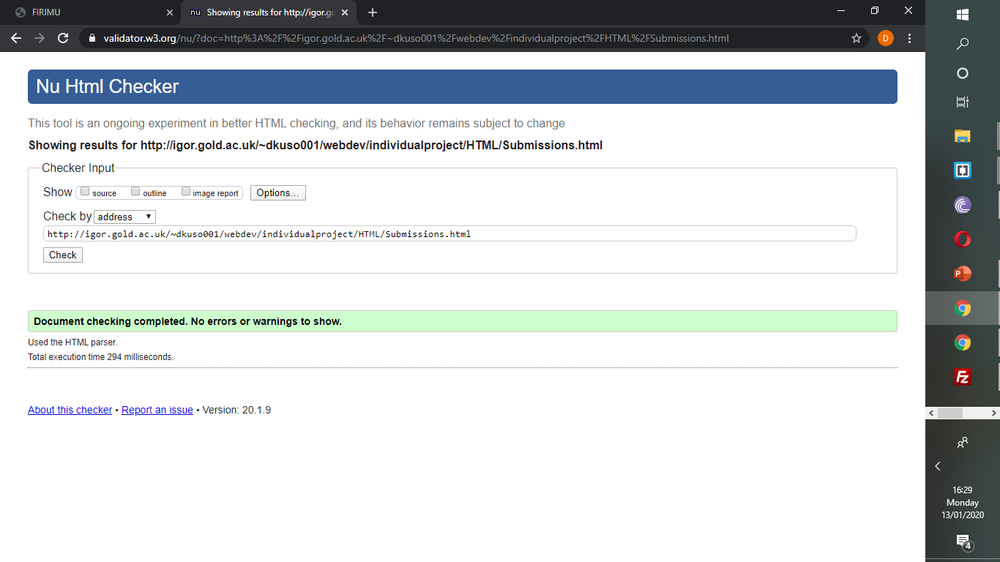